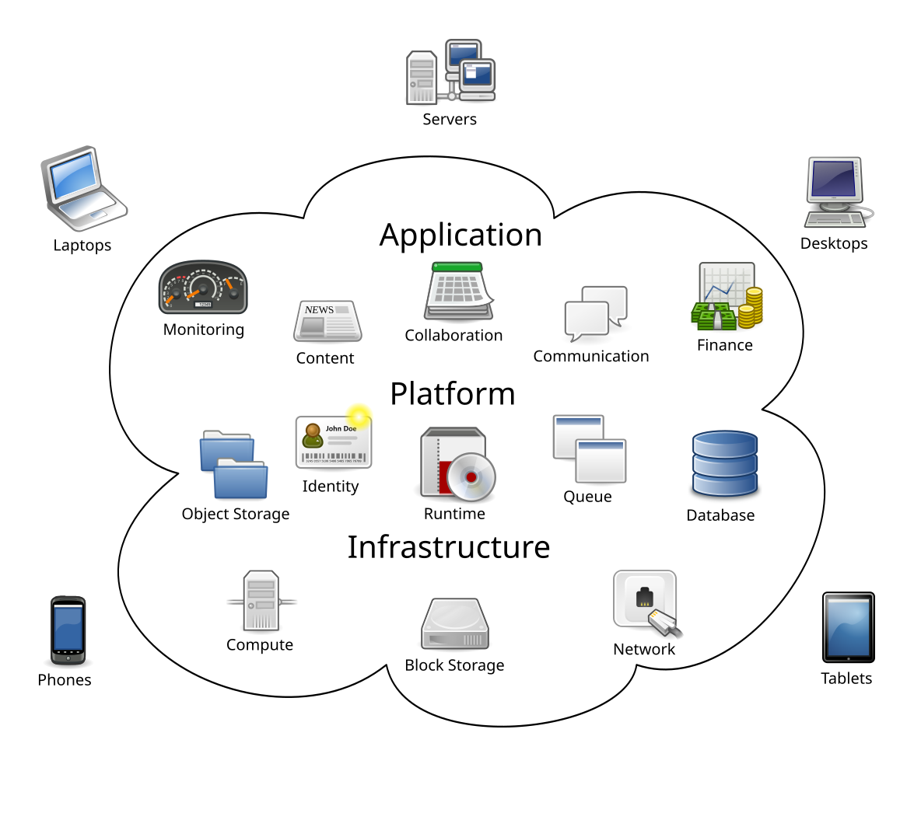

How the Internet Works
Where Websites Live
Watch & Learn
- What is a Server? Servers vs Desktops Explained (PowerCert, 10 min)
- Web Server Concepts and Examples (WebConcepts, 8 min)
- The Client Server Model — Clients and Servers (The TechCave, 7 min)
- What is Web Hosting and How Does It Work? (Create a Pro Website, 6 min)
Video Quiz
In the PowerCert “What is a Server?” video, what is one key hardware difference between a server and a regular desktop computer?
In the PowerCert video, where are servers typically stored?
In the WebConcepts “Web Server Concepts” video, what two things does the term “web server” refer to?
In the WebConcepts video, what does a web server software do when it receives a request from a browser?
In The TechCave “Client Server Model” video, what role does the client play in the client-server relationship?
In the “What is Web Hosting” video by Create a Pro Website, what is web hosting compared to in real life?
Theory

Client vs. Server
Every time you open a website, two machines are involved. Your device — phone, laptop, tablet — is the client. It sends a request: “Hey, give me the page at this address.” Somewhere across the Internet, another computer receives that request, finds the right files, and sends them back. That computer is the server.
This back-and-forth is called the client–server model, and it powers almost everything online: websites, email, video streaming, multiplayer games. The client initiates communication; the server waits, listens, and responds. A single server can handle requests from thousands of clients at the same time — like a popular restaurant with a kitchen that never closes.
Your browser (Chrome, Firefox, Safari) is the most common client. It speaks HTTP to ask the server for HTML, CSS, images, and scripts, then assembles everything into the page you see.
What Is a Web Server?
The word “server” means two things at once. First, it’s a physical machine — a computer built to run around the clock, usually stored in a data centre with backup power, heavy-duty cooling, and tight security. Server hardware uses special processors (like Intel Xeon chips) designed for reliability rather than gaming speed.
Second, “server” refers to the software running on that machine — the program that listens for incoming HTTP requests and responds with the right files. The three most common web-server programs are:
- Apache — the oldest and most widely used, powering websites since 1995
- Nginx (pronounced “engine-X”) — known for handling huge numbers of simultaneous connections efficiently
- Node.js — lets developers write server-side code in JavaScript, the same language used in browsers
When you type a URL into your browser, the request travels to the server’s IP address. The web-server software finds the file that matches the URL, and sends it back over the network. If the requested file doesn’t exist, the server returns a 404 Not Found error — a page you’ve probably seen before.

Hosting Types: Shared, VPS, and Cloud
Most people don’t keep a server humming in their bedroom. Instead, they pay a hosting company to store their website on a machine connected to the Internet 24/7. There are three main types:
- Shared hosting — your website shares one physical server with hundreds of other sites. It’s cheap (a few dollars a month) and fine for small projects, but if someone else’s site gets a traffic spike, yours can slow down — like sharing a Wi-Fi connection with your entire apartment building.
- VPS (Virtual Private Server) — the physical machine is split into isolated virtual compartments using virtualisation. Each compartment acts like its own mini-server with guaranteed resources. More control, more power, higher price.
- Cloud hosting — your site runs across a network of servers managed by companies like Amazon Web Services, Google Cloud, or Microsoft Azure. If one machine fails, another takes over instantly. You pay for what you use, and the system scales automatically when traffic grows — perfect for apps that might go viral overnight.
From Code to Live Website
So you’ve written some HTML, CSS, and JavaScript. How does it go from files on your laptop to a website anyone can visit? Here’s the typical path:
- You write your code locally and test it in a browser on your own machine.
- You choose a hosting provider and sign up for a plan (shared, VPS, or cloud).
- You upload your files to the server. This can be done with FTP, SFTP, or a Git-based deployment that automatically pushes new code to the server whenever you save changes.
-
You register a domain name
(like
mysite.com) and point its DNS records to your server’s IP address. Now, when someone types your domain into their browser, DNS translates it to the server’s address, and the web-server software delivers your pages. - You set up HTTPS with a TLS certificate (often free through Let’s Encrypt) so visitors have a secure, encrypted connection.
After these steps, your site is live. Every time a visitor’s browser makes a request, the server responds with your HTML, CSS, and JavaScript — and the page appears on their screen in a fraction of a second.
Theory Quiz
In the client–server model, which device sends the request?
Which web-server software lets developers write server-side code in JavaScript?
What is the main disadvantage of shared hosting?
After uploading files to a hosting server, what must you point to the server’s IP address so visitors can find your site by name?
Why is cloud hosting a good choice for a website that might suddenly get a lot of traffic?
Build: “My First Server Page”
Create an HTML page that looks like it’s being “served” from your own computer. The page should explain what a server does, using styled sections, and include a live clock to simulate dynamic, server-generated content.
Requirements:
- A heading that says “Hello! This page is served from MY computer!”
- Three styled
<section>blocks explaining: what a server is, how a request-response cycle works, and what hosting means - Each section should have a different background colour and an icon or emoji
- A live clock (
<div id="clock">) that updates every second usingsetInterval(), showing the current date and time — simulating a “server timestamp” - A footer that displays “Served at: ” followed by the time the page was first opened (use
new Date().toLocaleString())
Solve it in JSFiddle:
Open JSFiddlePaste your HTML into the HTML panel, CSS into the CSS panel, and JS into the JavaScript panel. Click “Run” to see the result!